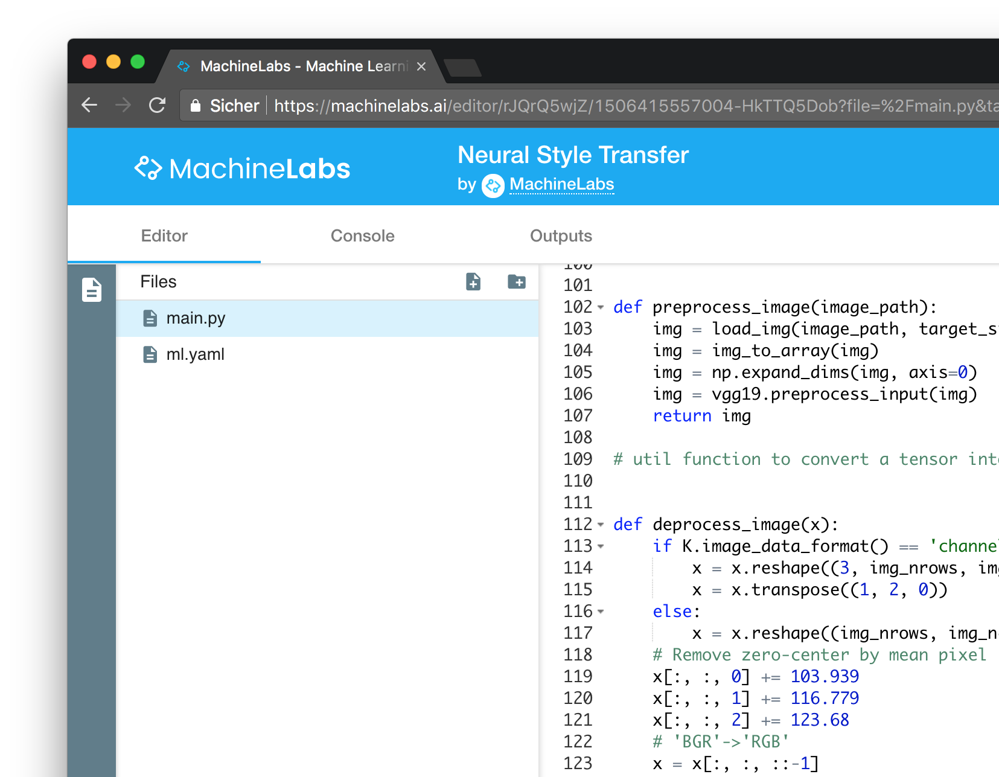

MachineLabs is an online editor for Machine Learning. Our mission is to make this field explorable, sharable and accessible for everyone.
Support us on our mission and become a Patron!


Support us on our mission and become a Patron!